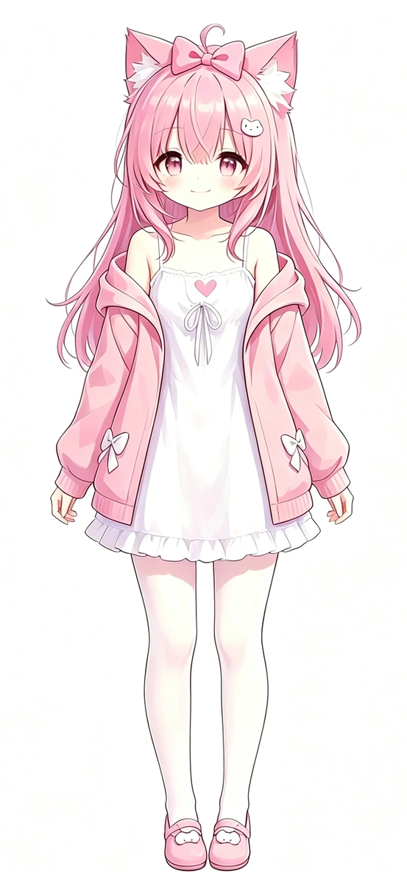

01
可用
Lumina AI Core
会聊天的那一层
本地大模型对话内核。1.7B / 4B / 8B 三档模型，语义缓存、历史检索、MCP 工具调用，还有一层把回答染成米娅语气的转换。
查看仓库五个项目 · 两个角色 · 一间工坊
把光留在自己的机器里。
从 1-bit 推理内核，到会说话、会画画、迟早站上你桌面的角色。Lumina 是一个人的 AI 工坊：能离线就离线，能本地就本地，联网只是一个选项。
先说清楚
五个项目共用一个前提：模型应该待在它该跑的地方——你的电脑里。能离线就离线，能本地就本地。
01 / 系列
两件已经能用，一件在内部天天跑，两件还在图纸上。
会聊天的那一层
本地大模型对话内核。1.7B / 4B / 8B 三档模型，语义缓存、历史检索、MCP 工具调用，还有一层把回答染成米娅语气的转换。
查看仓库把 1-bit 模型压进 CPU
基于 llama.cpp 的 Q1_0 推理分支。14 个 CPU 变体、per-128 激活、寄存器分块 GEMM，还有一张把 token 生成再提速的二值查表。
查看仓库离线开口
六种语言的离线 TTS，跑在 CPU 上；需要更私人的音色时，再接一段 RVC。一句四秒的话，生成大约比实时快一点。
在 B 站看演示先画你的角色，再画你的画
面向个人工作流的 AI 绘图与训练引擎。先让模型记住埃文和米娅，再让他们出现在任何画面里。
在 B 站关注进度让角色站到桌面上
AR 虚拟角色引擎。把设定稿里的两个猫耳请出来，站在摄像头、桌面和你的手边。
在 B 站关注进度02 / Engine
Bonsai 的 Q1_0 权重只有 ±1。Lumina Engine 为它单独写了一套 CPU 内核：per-128 激活量化、寄存器分块 GEMM、单列 GEMV，以及一张二值查表。其余量化类型、后端和模型保持原样。
Lumina-Engine-cli.exe -m Bonsai-8B.gguf -p "..." -n 256 -t 6
i5-10400 · 6 线程 · 单通道 DDR4-2666 · Bonsai-8B（1.07 GiB）。同场 A/B；绝对值受内存带宽影响，比值更可靠。
Token 生成（tg）+13%；打开 Q1LUT 后本机 tg 约 +30%。
03 / Voice
六种语言的离线 TTS。所有 checkpoint 和 BERT 编码器都嵌在本地，断网也照样开口；需要更私人的音色时，再接一段 RVC。
04 / 角色
埃文和米娅先是 380 的 OC，后来才变成这套工具的两张脸。AI Core 里的两种回答语气，Voice 里的两种声线，Artist 里的两种画风，最后都会在 AR 里站到同一张桌子上。
值班员
蓝头发，猫耳，永远穿那件渐变卫衣。他话不多，负责让东西真的跑起来：Engine 的内核、Core 的调度、AR 里的骨骼。
在 Core 里，他是不绕弯子的那种回答；在 Engine 里，他是终端跑完 256 个 token 后的一行 OK；在 AR 里，他负责把每根骨头放回正确的位置。
先让它跑起来，再谈优雅。

声线与画笔
粉色长发，蝴蝶结，说话像在唱歌。她负责所有需要被听见的部分：Voice 的声线、Artist 的笔触，还有 Core 里那层米娅语气转换。
在 Voice 里，她可以是英语、中文或者日语；在 Artist 里，她先学会自己的脸，再画别人的；在 Core 里，她让回答听起来不那么像机器。
同一句话，可以有十七种说法。
设定与插画来自 380 本人的 OC。请勿商用。